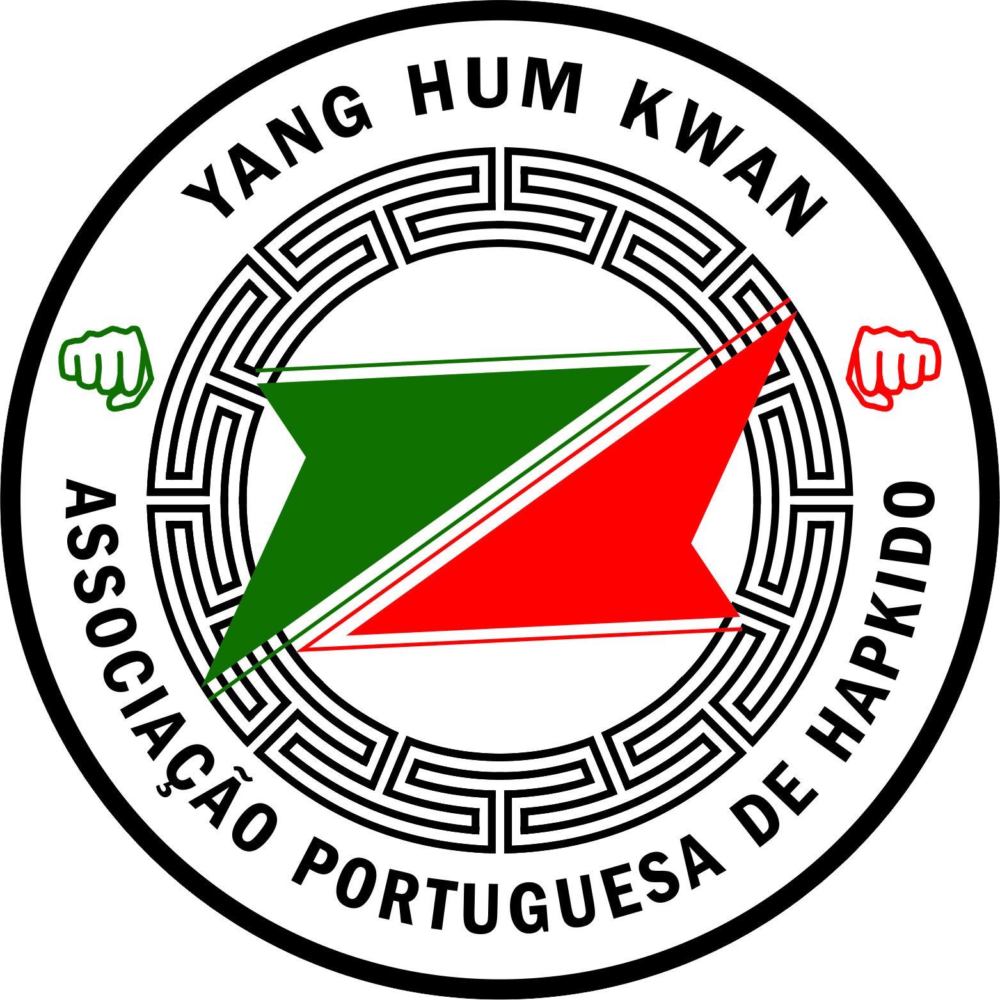

yang hum kwan
Associação portuguesa de hapkido
Associação Portuguesa de Hapkido Yang Hum Kwan
A Associação Portuguesa de Hapkido Yang Hum Kwan é uma associação desportiva constituída a 2 de Julho de 1996, na qual o Hapkido Yang Hum Kwan é oficialmente representado em Portugal.
Tem como objetivo a prática e o desenvolvimento das modalidades que congrega no seu âmbito de ação, promovendo cursos de defesa pessoal a agentes de ensino e atletas de qualquer arte marcial e possui programas especialmente vocacionados para as forças militares e policiais. Está filiada na International Yang Hum Kwan Association, na Federação Portuguesa de Taekwondo, Federação Portuguesa de Hapkido e na World Kido Federation, esta última presidida pelo Grão-Mestre In Sun Seo.
Esta associação contribui com a formação de Técnicos de Hapkido em colaboração com a International Yang Hum Kwan Hapkido Association. Participou em torneios internacionais de Taekwondo, várias exibições nacionais e internacionais de Hapkido, destacando a Exibição Internacional de Hapkido Memorial António Camino (Córdoba) e a Exibição Internacional Memorial Paulo Alexandre Reis (Lisboa). Também colaborou com a Associação de Taekwondo de Santarém, com a associação de Taekwondo da Beira-Litoral e a Associação de Taekwondo de Aveiro.
Desde 2018 que é filiada à Federação Portuguesa de Hapkido, um órgão que visa reconhecer o Hapkido a nível nacional, assim como os seus treinadores e atletas.
Orgãos Sociais
Assembleia Geral
| assembleia@yanghumkwan.pt | |
|---|---|
| Presidente | Luís Miguel dos Santos Paula |
| Vice-Presidente | Filipe Alexandre dos Santos Martins |
| Secretário | Rita Patrícia Macedo Sousa |
Direção
| direcao@yanghumkwan.pt | |
|---|---|
| Presidente | Carlos Ricardo Rodrigues Lourenço |
| Vice-Presidente | Luís Miguel Cardoso Machado |
| Tesoureiro | Nuno Jorge Pinto Lopes |
Conselho Fiscal
| fiscal@yanghumkwan.pt | |
|---|---|
| Presidente | A defenir |
| Vice-Presidente | Francisco Loureiro Castel-Branco |
| Vogal | Jorge Alexandre Brito Pereira Carvalho |
Direção
| direcao@yanghumkwan.pt | |
|---|---|
| Presidente | Carlos Ricardo Rodrigues Lourenço |
| Vice-Presidente | Luís Miguel Cardoso Machado |
| Tesoureiro | Nuno Jorge Pinto Lopes |